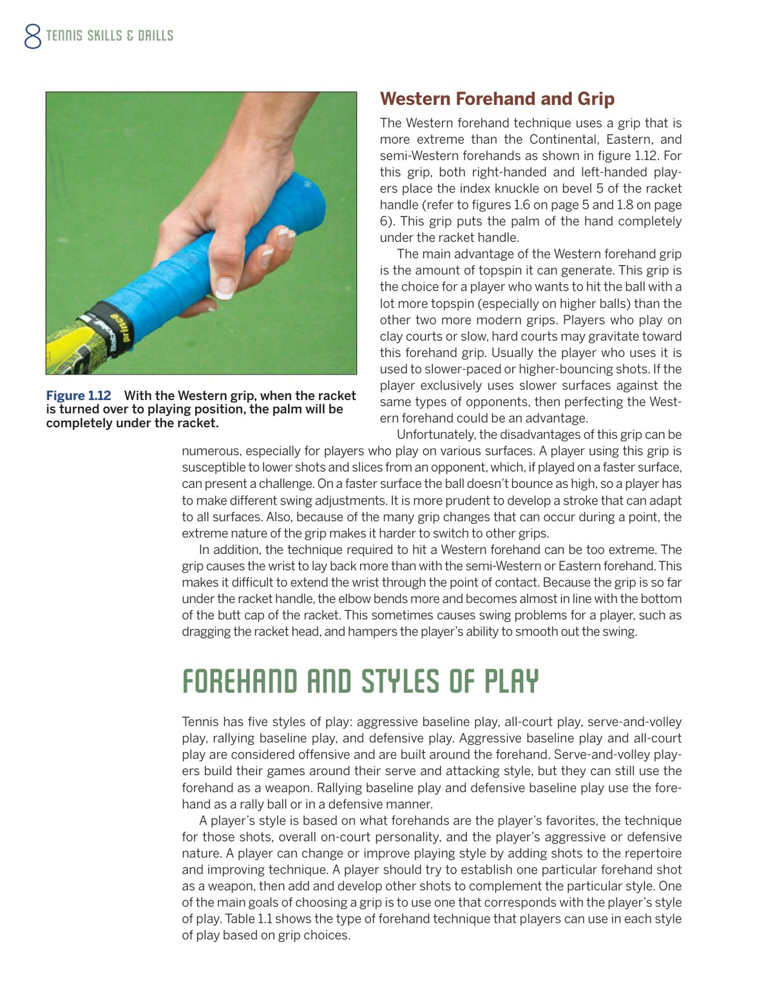
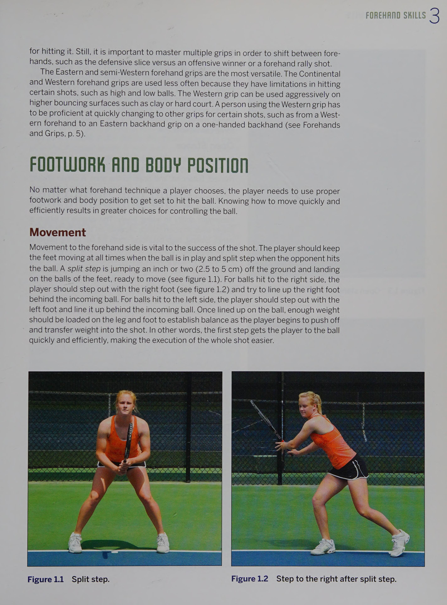

Phần I: Kỹ Năng & Bài Tập Thuận Tay Đột Phá (Forehand Mastery)
Phương pháp huấn luyện chuyên sâu của cựu HLV Trưởng Đội tuyển Quốc gia USTA Joey Rive: Động lực học cú thuận tay hiện đại, đòn né trái đánh phải (Inside-Out) và bài tập kiểm soát độ sâu
1. Vũ Khí Thuận Tay Hiện Đại: Nạp Lực, Độ Trễ & Tiếp Xúc
Cú thuận tay ngày nay đã trở thành vũ khí săn điểm số một của hầu hết các tay vợt hàng đầu thế giới.
Cách một vận động viên thực hiện cú thuận tay sẽ định hình toàn bộ phong cách và bản sắc thi đấu của anh ta trên sân quần vợt.
HLV Joey Rive — cựu tay vợt Top 60 ATP và từng đảm nhiệm cương vị HLV Quốc gia tại Hiệp hội Quần vợt Hoa Kỳ (USTA) — phân tích ba giai đoạn vàng cấu thành một cú thuận tay hủy diệt:
Giai đoạn 1: Nạp lực chân sau (Loading the back leg):
Dù sử dụng thế đứng mở hay bán mở, người chơi phải dồn toàn bộ trọng lượng cơ thể lên chân sau (chân phải của người thuận tay phải), gập nhẹ đầu gối để nén lò xo cơ học.
Giai đoạn 2: Tạo độ trễ đầu vợt (Racket Lag):
Khi hông và thân trên xoay mở về phía trước, cánh tay cầm vợt được thả lỏng hoàn toàn, khiến cây vợt bị tụt lại phía sau như chiếc roi da mềm mại.
Độ trễ này giúp tích lũy quán tính và kéo dài quãng đường gia tốc trước khi va chạm bóng.
Giai đoạn 3: Điểm tiếp xúc phía trước và Vuốt vợt vòng qua vai (Windshield-wiper follow-through):
Điểm tiếp xúc bóng bắt buộc phải ở phía trước mũi chân trước từ ba mươi đến bốn mươi centimet.
Mặt vợt quét vút từ dưới lên trên và gập cẳng tay gạt qua thân người như một chiếc cần gạt nước ô tô, tạo ra độ xoáy cuộn topspin khổng lồ ép bóng cắm sâu vào sân.

